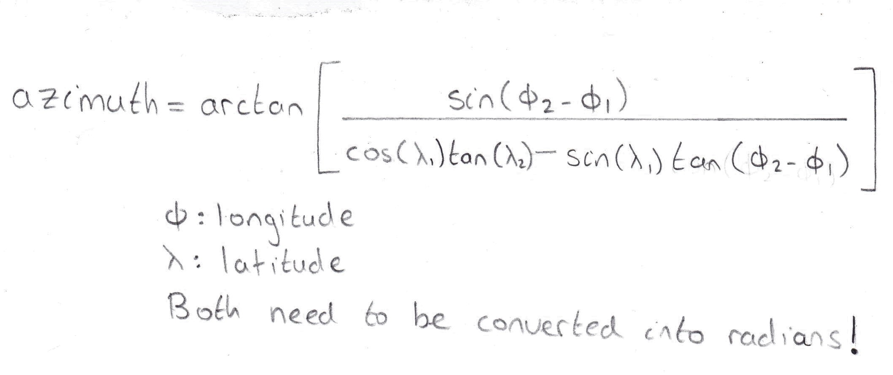
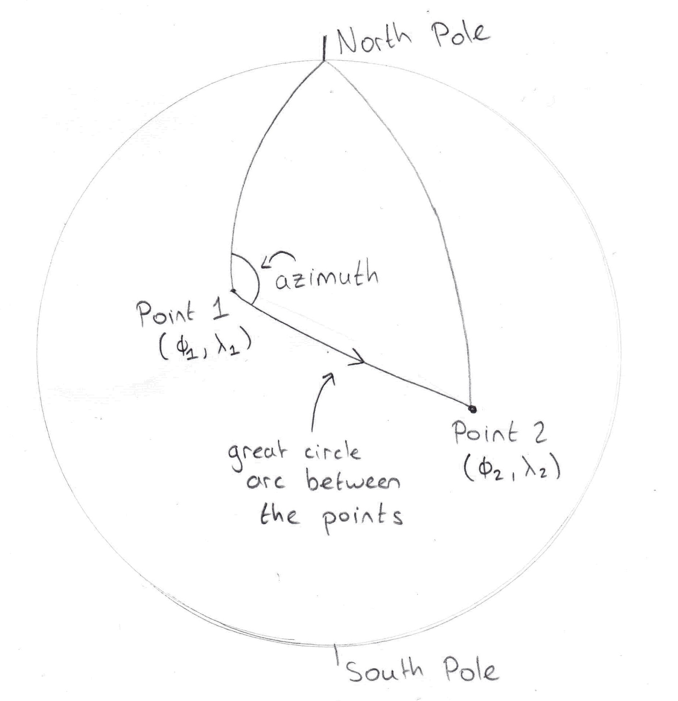
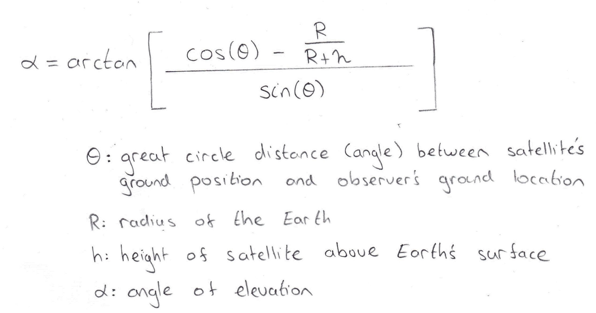
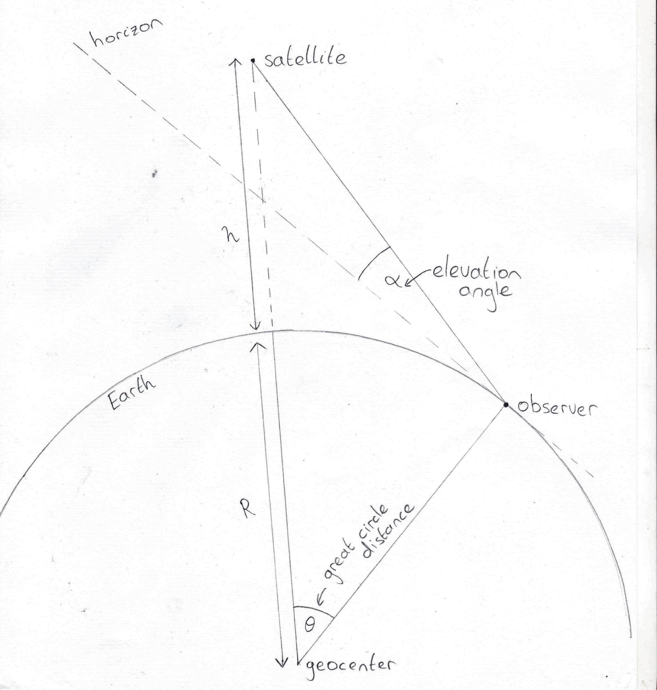

If you haven't already, I would strongly recommend reading this to cover the basic concepts about spherical geometry.
Let's say we need a directional antenna (e.g. dish, yagi) to be pointed at a given satellite from our location on the Earth's surface. How do we know where to point?
The coordinate system we will use to point our antenna will be azimuth-elevation. From our ground location, the azimuth is the angle measured from true North to any particular direction parallel to the plane of the ground i.e. similar to compass bearings. Elevation is the angle from our local horizon up to the satellite. These are the coordinates we want to calculate in the end.
A satellite orbiting around Earth is always directly above a single point on the Earth's surface. This point can be easily located using the latitude-longitude coordinate system. We also need to know the latitude-longitude coordinates we are observing from.
N.B. We will assume the Earth is a perfect sphere for these calculations.
This is the formula to calculate Point 2's azimuth measured from Point 1. The phis represents latitude and lambdas represents longitude, which must be first converted to radians.
 This formula is a little more complicated. It needs the height, h, of the satellite above the Earth's surface and the radius of the Earth, R in addition to the latitude-longitude coordinates of the observer and satellite. I have derived this formula myself so please contact me if you spot any mistakes.
 We have calculated where we should point our satellite in the sky. However, remember that these equations assumed the Earth is a perfect sphere whereas the real earth is an oblate spheroid, so our results will be off by a small amount. I haven't worked out equations that account for this but hopefully the two given here are a good starting place if you're curious.